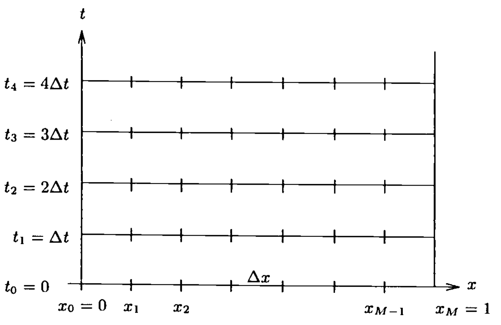

5) Finite Differences#
Last time:
Introduction to programming in Julia
Errors
Plotting
Today:
Introduction to Finite Difference schemes
1.1 Introduction
1.2 Getting Started
1. Introduction to Finite Difference schemes#
1.1 Introduction#
This lecture introduces finite-difference grids, notation, and the construction of difference approximations to PDEs. We also show basic boundary-condition treatments and immediately implement a first solver to build numerical intuition. Some of the material of this section is largely based on the Thomas (1998), Numerical Partial Differential Equations: Finite Difference Methods book.

1.2 Getting Started#
Consider the initial–boundary value problem (IBVP) for the heat equation in 1D
where \(f(0)=a(0)\), and \(f(1)=b(0)\).
Of course, this problem can be solved analytically. For purposes of illustration, we shall solve it numerically.
Definition
Discretization: In applied mathematics, discretization is the process of translating continuous functions, models, variables, and equations into discrete counterparts (that a computer can digest).
Of course, some essential information can be “lost in translation”. This would lead to undesirable outcomes.
In this course we will learn that some discretization methods (or schemes) are more suitable than others; and how the choice of the “right” method is often problem-dependent.
Most importantly, we will learn how to assess the goodness of numerical discretizations (in terms of accuracy, reliability, robustness, efficiency, and so on)
We begin by discretizing the spatial domain by placing a grid over the domain. For convenience, we will use for now a uniform grid (i.e., with all equally distant grid points), with grid spacing \(\Delta x = 1/M\) (see figure above).
To refer to points in the grid, we shall call the points \(x_k\), \(k=0,\ldots,M\), where
Likewise, we discretize the time domain similarly by placing a uniform grid on the temporal axis with grid spacing \(\Delta t\).
The resulting grid in time-space domain is illustrated in the figure below

Notationally, we define \(u_k^n\) to be a function defined at the point \((k \Delta x, n \Delta t)\), or the lattice point \((k,n)\). \(u_k^n\) represents the approximation to the solution of the problem of interest (the heat equation above).
Numerical differentiation#
How to define discrete derivatives?
From calculus, the definition of the derivative of a function at a given point.
Continuous:
Discrete:
Taylor series#
Classical accuracy analysis assumes that functions are sufficiently smooth, meaning that derivatives exist and Taylor expansions are valid within a neighborhood. In particular,
The big-\(O\) notation is meant in the limit \(h\to 0\). Specifically, a function \(g(h) \in O(h^p)\) (sometimes written \(g(h) = O(h^p)\)) when there exists a constant \(C\) such that
First-order spatial derivatives#
To define derivatives on our lattice grid, we use Taylor’s expansion:
Similarly,
We can define the first-order derivative at the point \(x_k\) using the forward difference:
this is a first-order approximation.
Similarly, we can define the first-order derivative at the point \(x_k\) using the backward difference:
this is a first-order approximation.
If we use one point to the right of \(x_k\) and one point to the left of \(x_k\) we have a centered difference approximation for the first-order derivative at the point \(x_k\) using the centered difference:
this is a second-order approximation of the first-order derivative.
We note that the centered difference approximates the first derivative with respect to \(x\) more accurately than either of the one-sided differences. In fact, the size of what is left is \(O( \Delta x^2 )\) versus \(\Delta x\).
First-order temporal derivative#
In the time domain:
Similarly,
The first-order time derivative at the point \(x^n\) can be defined using the forward difference:
this is a first-order approximation.
Similarly, we can define the first-order time derivative at the point \(x^n\) using the backward difference:
this is a first-order approximation.
If we use one point forward in time relative to \(x^n\) and one point backward in time relative to \(x^n\), we have a centered difference approximation for the first-order time derivative at the point \(x^n\) using the centered difference:
this is a second-order approximation of the first-order time derivative.
We note that the centered difference approximates the first derivative with respect to \(t\) more accurately than either of the one-sided differences. In fact, the size of what is left is \(O( \Delta t^2 )\) versus \(\Delta t\).
Second-order spatial derivatives#
To define a second-order spatial derivative, let’s repeat the same process. This time, we need to compute the derivative of a derivative. Let’s consider half step sizes. The approximated solution \(x_{k+\frac{1}{2}}^n\) is defined at the mid grid point \( (\left(k+\frac{1}{2} \right) \Delta x)\). Similarly, \(x_{k-\frac{1}{2}}^n\) is defined at the mid grid point \( (\left(k-\frac{1}{2} \right) \Delta x)\).
Now that we have defined the discrete derivatives in each dimention, we can discretize our IVP for the heat equation putting back the explicit dependence of the approximated solution on both independent variables, \(u_k^n\). Let’s use (1.2.4) and (1.2.5):
This scheme is abbrievated as F.T.C.S. = Forward in Time, Centered in Space. We can recast this to isolate the approximated solution at the new time step (i.e., what we want to estimate) on the left-hand side:
Finally, the Initial Condition (I.C.) and Boundary Conditions (B.C.) can be approximated by:
and
We can see that eq. (1.2.7) gives \(u_k^0\), for \(k=0, \ldots M\); eq. (1.2.6) with \(n=0\) can be used to determine \(u_k^1\), for \(k=1,\ldots M-1\) (that is, the interior grid points only); and finally, eq. (1.2.8) and (1.2.9) can be used to determine \(u_0^1\) and \(u_M^1\).
Thus, eq. (1.2.6), (1.2.8) and (1.2.9) use the information at \(n=0\) to determine \(u\) at the first time step. Once \(u^1_k\), \(k=0, \ldots M\) is known at all spatial grid points, eq. (1.2.6), (1.2.8) and (1.2.9) can be used to determine \(u\) at \(n=2\). And, of course, this process can be continued to determine \(u_k^n, k+0, \ldots M\) to any desired time step \(n\).
It should be noted that it was not poissible to determine \(u^1_0\) and \(u^1_M\) by using eq. (1.2.6), since one of the subscripts \(k+1\) and \(k-1\) would reach out of bounds (less than \(0\) or greater than \(M\)) for either of the calculations. Hence, it will almost always be necessary to have some special treatment of the boundary, such as eq. (1.2.8) and (1.2.9).
We call this FTCS scheme an explicit scheme, because we are able to solve for the variable at the \((n+1)\)-st time step explicitly.